Part 2: Training
12.8 Procedural Lab
This lab walks you through the step-by-step actions that you must follow to properly compound an ampule-based preparation using aseptic technique. Take your time. Work through each step methodically and with close attention to detail.
Note: For the purposes of this procedural lab, you will not perform handwashing and PEC cleaning and disinfection procedures unless directed to do so by your instructor. Should your instructor ask you to perform these procedures, refer to Chapter 8 for instructions on handwashing and to Chapter 9 for cleaning and disinfection procedures of a PEC.
Essential Supplies
To complete the Unit 2 procedural labs, you will need to ensure that various essential anteroom and buffer room supplies such as those listed in Table 12.1 are available for your use. If you are using a PEC other than a LAFW, you will need to alter some procedures to account for the type of PEC and the direction of airflow coming from the HEPA filter. In this case, refer to instructor direction or facility SOPs for specific instructions regarding this procedural lab.
| Anteroom Supplies |
|---|
|
| Note: As mentioned earlier, the Chapter 12 Procedural Lab does not include steps for performing hand hygiene procedures. If your instructor directs you to perform hand hygiene as part of the Chapter 12 Procedural Lab, you will need access to a sink and hand hygiene supplies. Refer to Chapter 8 for details on hand hygiene procedures. Remember that, in practice, you must perform hand hygiene procedures prior to preparing a CSP in a sterile compounding area. |
| Buffer Room Supplies |
|
| Note: As mentioned earlier, the Chapter 12 Procedural Lab does not include steps for cleaning and disinfection of a PEC. If your instructor directs you to do this as part of the Chapter 12 Procedural Lab, you will need access to PEC cleaning and disinfection supplies. Refer to Chapter 9 for details on PEC cleaning and disinfection procedures. Remember that, in practice, you must clean and disinfect a PEC prior to preparing a CSP. |
Procedure-Specific Supplies
In addition to the supplies listed in Table 12.1, gather the following items specific to the Chapter 12 Procedural Lab:
- promethazine 50 mg/2 mL ampule
- 100 mL D5W IVPB
- 3 mL Luer-lock syringe × 1
- regular needle (nonfilter, nonvented needle, 18 gauge to 20 gauge)
- filter needle
- sterile 70% IPA swabs
- tamper-evident, sterile, adhesive seals
- CSP label
- medication order.
Procedure
Take a careful, deliberate approach to each detailed step of this procedural lab. In practice, using this approach helps to ensure the compounding of a sterile preparation. Refer to instructor directions or facility SOPs to determine whether goggles are required for the procedure and whether sterile gloves should be donned in the anteroom or buffer room.
Note: For step 1 that follows, please refer to Chapter 6 for a reminder of the step-by-step procedures required for medication order and CSP label verification. For steps 2 and 3, refer to Chapter 7 for pharmacy calculation procedures. For steps 4–8, refer to Chapter 5 for a reminder of the process for gathering and staging supplies. For steps 9–20, refer to Chapter 8 for hand hygiene and garbing. For the purposes of this lab, you should perform steps 1–17 and steps 51–53 in the anteroom. Perform steps 18–50 in the buffer room.
Verifying the Label
- Review the CSP label to verify that all of the information on the label matches the medication order. To help you with this task, compare the CSP label (see Figure 12.4) to the medication order and patient ID label (see Figure 12.5).
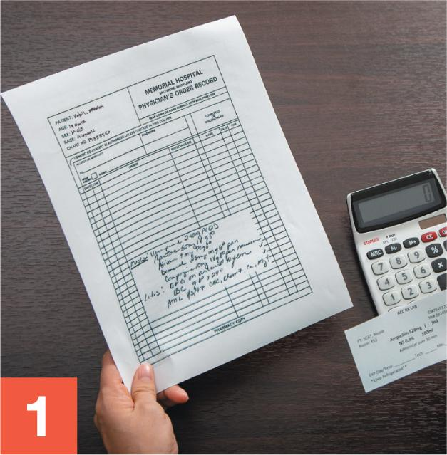
View long description Hide description
The label reads as follows: I V piggyback, Mercy Hospital, patient name, room, I D number, and R X number. Promethazine 30 milligrams, D5W 100 milliliters, rate: over 20 minutes. Keep refrigerated. Warm to room temperature before administration. This is a compounded preparation. At bottom: B U D, tech, and R P h.
View long description Hide description
The information is as follows: ID number, name, DOB, room, and doctor. A table at left shoes 4 columns for date, time, orders, and physician signature. Information above the left table includes allergy or sensitivity to and diagnosis. A table at the right for completed or discontinued status shows name, date, and time.
Calculating Desired Volume
- Read the label on the promethazine ampule (see Figure 12.6) to determine the concentration of the drug.
- Perform calculations based on the promethazine dosage information that is provided on the CSP label, and the promethazine concentration from the ampule label. In this example, the ampule label indicates that promethazine has a concentration of 50 mg/2 mL. Use the following formula to calculate the dose:
\[\frac{50\text{ }\!\!~\!\!\text{ mg}}{2\text{ }\!\!~\!\!\text{ mL}}=\frac{30\text{ }\!\!~\!\!\text{ mg}}{x\text{ }\!\!~\!\!\text{ mL}}\]Cross-multiply and then divide to solve for x (the desired dosage volume) for each dose. (For additional assistance, refer to Chapter 7 for step-by-step dosage calculation procedures.)
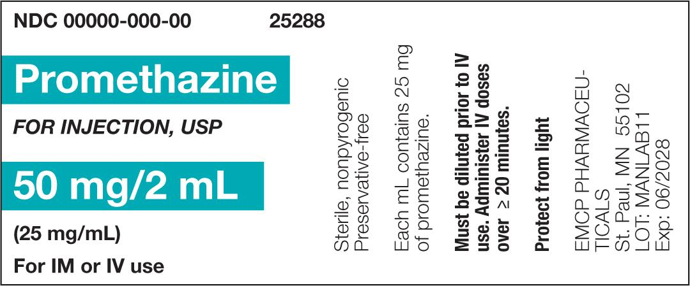
Gathering and Staging Supplies
- Place the medication order into a large plastic bag and the CSP label into a small plastic bag. Gather all supply items listed in the Supplies sections of the procedural lab.
- Using one or more sterile, low-lint wipers presaturated with sterile 70% IPA, thoroughly wipe down the entire transport vehicle and then discard the used wiper(s) into the waste container.
- Before crossing into the clean side of the anteroom, use a new, low-lint wiper presaturated with sterile 70% IPA to wipe the surface of the IVPB bag’s dust cover. Then place the IVPB bag on the transport vehicle.
- Repeat the procedure outlined in step 6 with each of the remaining supply items.
- Discard the used wipers into the waste container.
Garbing and Transport of Supplies
- Don shoe covers while stepping over the line of demarcation into the clean side of the anteroom.
- Don a head cover.
- Don a face mask.
- Don a facial hair cover (if needed).
- Don goggles for eye protection (if needed).
Note: For the purpose of this training lab, you will skip handwashing, unless told otherwise by your instructor.
- Don a gown.
- Apply an alcohol-based hand rub to all surfaces of your hands and allow your hands to dry thoroughly.
- Don sterile gloves.
- Apply sterile 70% IPA to all surfaces of your gloves and allow your gloved hands to dry thoroughly.
- Use a transport vehicle to bring all supply items into the buffer room.
- Place the transport vehicle onto a table or cart within the buffer room. If a cart is used, position it so that it does not interrupt airflow into the PEC’s prefilter.
- Apply sterile 70% IPA to all surfaces of your gloves and allow your gloved hands to dry thoroughly.
Note: For the purposes of this training lab, you will skip cleaning and disinfecting the PEC, unless told otherwise by your instructor.
Compounding an Ampule-Based Preparation
- Place all of the small supply items—such as the needles, syringe, and sterile 70% IPA swabs—in the outer six-inch zone of the PEC.
- Tear open the dust cover and remove the IVPB bag. Place the IVPB bag in the DCA of the PEC, and discard the dust cover into the waste container. Place the ampule into the DCA as well.
- Gently tap or swirl the ampule so that the head and neck are free of fluid and all of the medication is contained in the body of the ampule.
- Tear open the package of a new, sterile 70% IPA swab while holding it within the DCA. Remove the swab and wipe the neck of the ampule. Then place the used swab onto the PEC’s work surface within the DCA. Create a discard pile by placing the empty swab package in the outer six-inch zone.
- Remove a 3 mL Luer-lock syringe from its outer wrapper and place the wrapper into the discard pile. If necessary, remove the cap from the tip of the syringe. Prepare the syringe by aseptically removing the capped regular needle from its packaging and attaching it to the syringe. Temporarily place the capped needle-and-syringe unit onto the PEC’s work surface within the DCA. Place the outer packaging of the needle into the discard pile.
Opening the Glass Ampule
- Gently but firmly hold the body of the ampule with the thumb and index finger, curling the remaining three fingers around the body of the ampule to help stabilize it. To avoid potential injury, verify that the fingers of this hand are situated below the neck of the ampule.
- Place your other hand so that the thumb and forefinger have a firm grasp on the head of the ampule. Verify that the fingers of this hand are above the neck of the ampule.
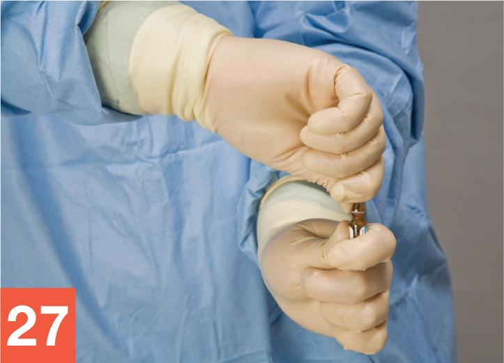
- Keeping your arms and fingers steady, apply pressure to the neck of the ampule with a quick snapping motion of the wrist. The ampule should break at the neck.
- Temporarily place the body of the ampule onto the PEC’s work surface within the DCA so that the ampule’s opening—now a critical site—receives uninterrupted airflow from the HEPA filter. Discard the head of the ampule into the sharps container.
Withdrawing the Correct Drug Volume from the Ampule
- Wipe sterile gloves with sterile 70% IPA and allow to dry thoroughly. Holding the barrel of the syringe, remove the cap of the needle, and place the needle cap onto the sterile 70% IPA swab. Be sure that the open end of the cap is pointed toward the PEC’s HEPA filter.
- Rotate the barrel of the syringe so that the needle bevel is pointing down. Stabilizing the ampule with your hand, carefully insert the needle into the ampule.
- Use the fingers of your hand to pull back on the flat knob of the plunger, gradually drawing fluid into the syringe. Continue to pull back on the plunger until the syringe contains slightly more than the desired dose. (In this procedural lab, the desired 30 mg dose requires 1.2 mL, plus a small amount of extra fluid.) Drawing up a small amount of extra fluid assists bubble removal (see step 34) and helps ensure you have enough fluid for the dose without having to make another withdrawal from the ampule.
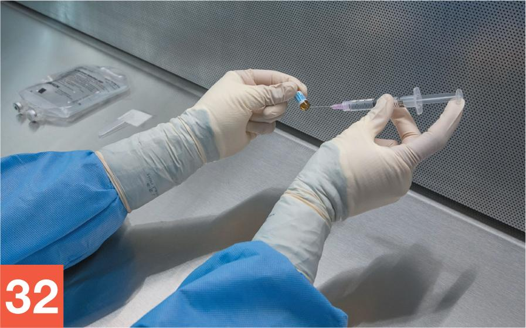
- Remove your fingers from the plunger. Grasp the barrel of the syringe as you would a dart, and remove it from the ampule. Place the ampule body onto the PEC’s work surface within the DCA. Carefully recap the needle.
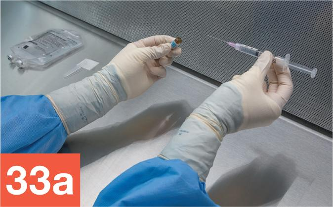
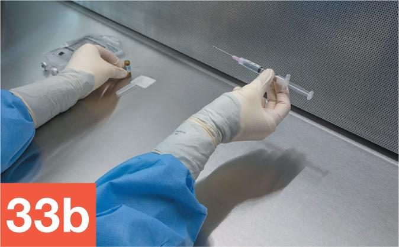
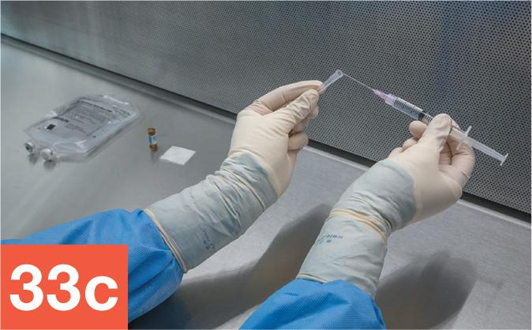
- Turn the capped needle-and-syringe unit so that the needle tip points upward. Tap the syringe to force air bubbles up toward the syringe tip. Continue to tap on the barrel of the syringe until all of the bubbles have been forced to the syringe tip.
- Use your hand to pull down slightly on the plunger to draw fluid from the needle into the syringe, thereby creating a small air pocket at the tip of the syringe. Slowly push up on the plunger to expel all air from the syringe. Release the plunger immediately once the fluid in the syringe comes into contact with the hub of the needle to avoid expelling fluid into the needle cap.
Note: Refer to Figure 12.3 for the proper procedure to remove bubbles from a syringe.
- Look closely at the filled syringe to determine how much fluid it contains. If the syringe contains the exact volume needed for the desired dose, skip step 37 and proceed to step 38. If the syringe does not contain the exact volume needed for the desired dose, proceed to step 37.
- To remove excess fluid from the syringe, remove the needle cap and carefully insert the needle back into the ampule. Keeping your eye on the graduations on the syringe barrel, push down on the plunger slowly to return any excess fluid into the ampule. Stop when you reach the correct volume. (In this procedural lab, the 30 mg dose requires 1.2 mL.) Release your thumb from the plunger, grasp the syringe at the barrel, and slowly remove it from the ampule.
- Carefully recap the needle.
- Hold the barrel of the syringe so that the needle tip is pointing toward the ceiling. Use the thumb and forefinger to pull down slightly on the plunger so that the fluid is drawn from the needle into the syringe, creating a small air pocket at the tip of the needle.
- Twist off the capped regular needle and place it temporarily onto the PEC’s work surface, next to the body of the ampule. Aseptically open the filter needle package, remove the capped needle, and attach the filter needle to the syringe. Place the needle packaging into the discard pile. Slowly push up on the plunger to remove air bubbles from the syringe. Verify that the syringe now contains the desired dose—in this case, 1.2 mL.
- Arrange the filled syringe with attached, capped filter needle; the ampule; the used regular needle; and the IVPB bag on the PEC’s work surface for a verification check by a pharmacist or your instructor.
Injecting the Medication into the IVPB Bag
- Once the verification check has been completed, rearrange items within the DCA so that the injection port of the IVPB bag and the filter needle-and-syringe unit receive uninterrupted airflow from the PEC’s HEPA filter.
- Open the package of a new, sterile 70% IPA swab. Remove the swab and wipe the injection port of the IVPB bag. Then place the swab on the PEC’s work surface directly under the injection port.
- Pick up the filter needle-and-syringe unit, and hold the barrel of the syringe as you would a dart. Remove the cap of the filter needle and place the needle cap onto the IPA swab that you previously placed on the PEC’s work surface (see step 24). Be sure that the open end of the cap is pointed toward the PEC’s HEPA filter.
- Hold the injection port of the IVPB bag steady while taking care to avoid shadowing or touching the injection port. Then insert the needle straight into the injection port. Take care not to puncture the sidewall of the injection port.
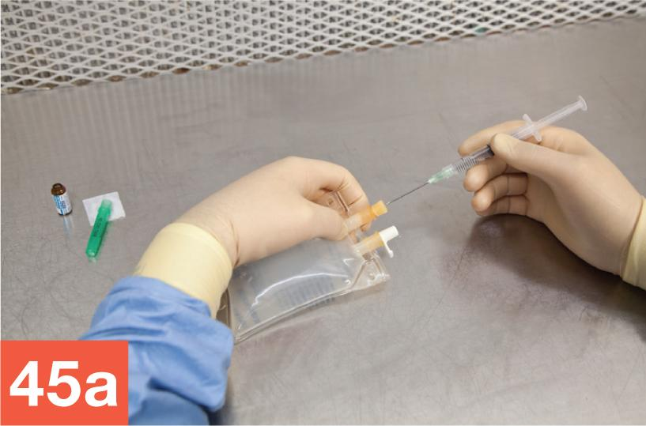
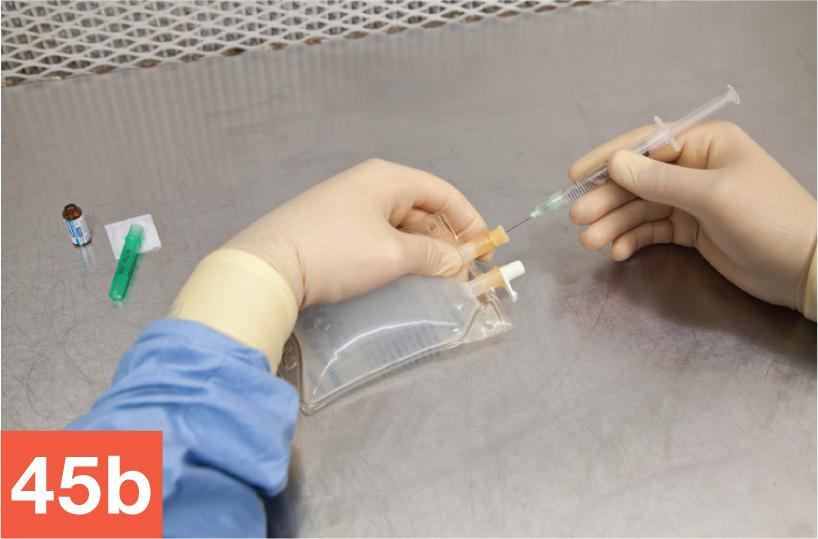
- Inject the medication into the IVPB bag by pressing on the flat knob of the plunger with your thumb or forefinger.
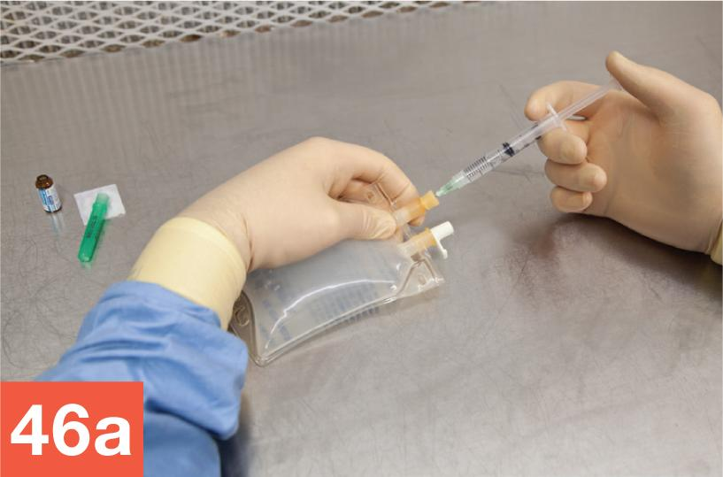
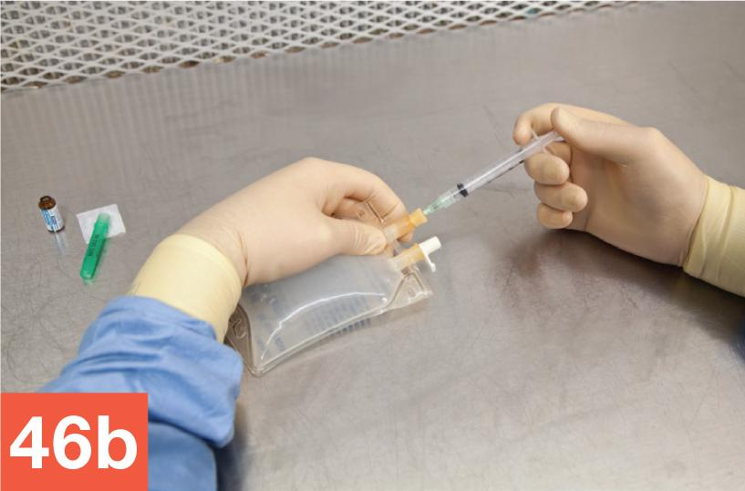
- Holding only the barrel of the syringe, carefully remove the filter needle-and-syringe unit from the IVPB bag. Discard the needle-and-syringe unit into the sharps container without recapping the needle.
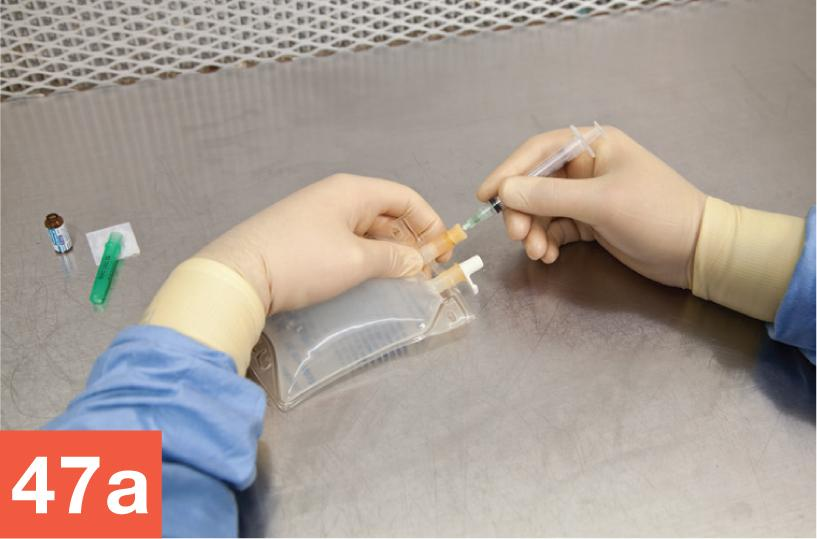
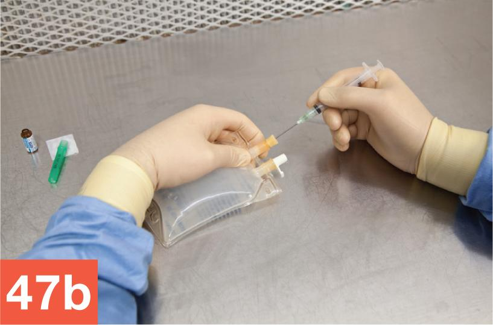
- Wipe sterile gloves with sterile 70% IPA and allow to dry thoroughly. Squeeze the IVPB bag and examine it for leaks, precipitates, or evidence of incompatibility. If there are no signs of these issues, cover the injection port with a tamper-evident, sterile, adhesive seal.
- Remove the CSP label from the plastic bag and affix the label to the IVPB bag.
Cleaning Up after the Procedure
- Place the waste from the discard pile into the regular waste container. Discard the ampule and regular needle into the sharps container. Wipe sterile gloves with sterile 70% IPA and allow to dry thoroughly. Place the labeled CSP and any remaining supply items into the transport vehicle and return the vehicle to the anteroom.
- In the anteroom, complete the compounding procedures by using a pen to record your initials in the proper location on the CSP label.
- Remove your garb according to the standard protocol outlined in Chapter 8. Return any unused supply items to their proper locations.
- Await a directive from your instructor regarding the completed CSP. In practice, you will follow your facility’s protocol and either place the CSP in the proper storage location (refrigerator, shelf, etc.) or deliver the CSP to be administered to a patient.